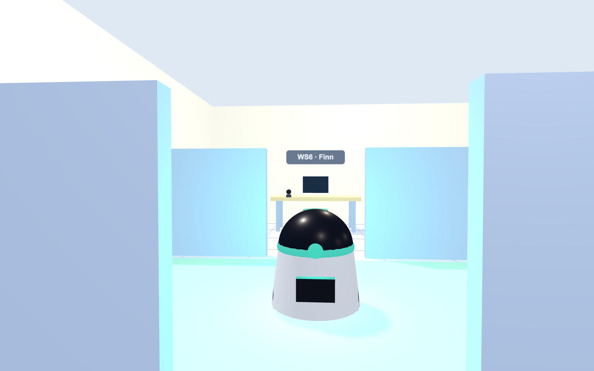
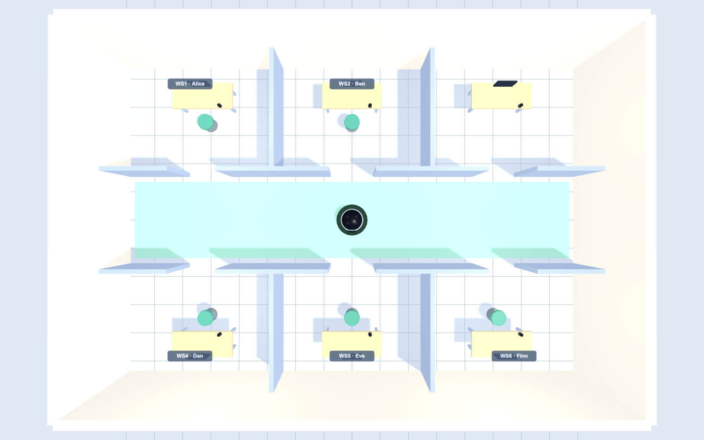
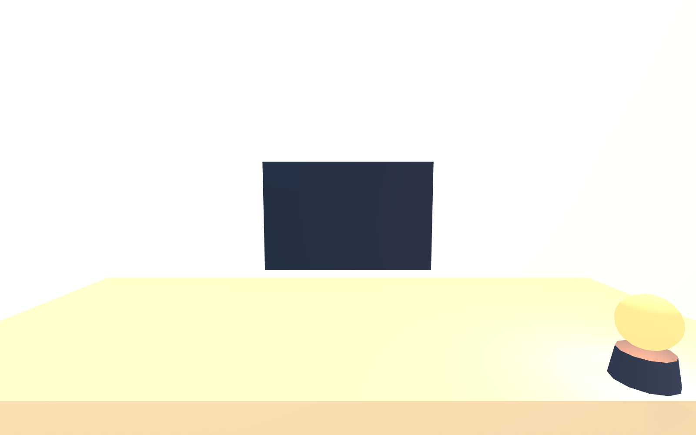

A voice-summoned mobile waste-collection robot for shared offices — studied as a first-person browser simulation with spatial audio. 一台面向共享办公室的语音召唤移动收垃圾机器人——以带空间音频的第一人称浏览器仿真来研究。
The pivot: originally meant for a physical Leon robot; rebuilt as a controlled simulation when the hardware couldn’t be arranged in time — same research questions, a more reproducible platform. 关于转向：原计划用实体 Leon 机器人，因硬件来不及，转做受控仿真——研究问题不变，平台更可复现。

Overview概览
Summoning a service robot today usually means opening an app and tapping through menus. We ask whether summoning by voice — saying “over here” — can replace that, and whether adding lightweight visual feedback helps people trust the robot appropriately. The robot estimates the caller’s direction by sound and maps it to a named desk; because that is imperfect, it sometimes goes to the wrong person — so the study also asks whether users notice, and whether queueing under load still feels fair. 如今召唤服务机器人通常要开 App、点菜单。我们想知道：用语音召唤——喊一句 “over here”——能不能取代它；再加上轻量的视觉反馈，能否帮人恰当地信任机器人。机器人靠声音判断呼叫方向、映射到某张工位；由于并不完美，它有时会走错人——所以研究还问：用户是否察觉得到，以及高峰排队时是否仍觉得公平。
Does voice really cut the cost of summoning vs. an app?语音召唤真的比 App 省事吗？
When the robot goes to the wrong desk, do people catch it?机器人走错桌时，人能不能及时发现？
When several people call at once, does queueing feel fair?多人同时召唤、要排队时，感觉公平吗？
Demo演示
Sit at your desk, summon the robot by app vs. voice, and rate each trial. The robot localizes you and drives over, logging every trial to CSV.坐在工位上，分别用 App 和语音召唤机器人，并为每次体验打分。机器人定位你、开过来，每次试次都记录成 CSV。
How it works原理
A voice call gives a noisy bearing; the hard part is resolving it to the right person’s desk. Feedback is delivered to your seat (a desk light), not on the robot — because a seated person can’t see through walls.一次语音呼叫给出一个有噪声的方向；难点是把它解析到正确那个人的工位。反馈给在你的座位上（桌面提示灯），而不是机器人身上——因为坐着的人看不穿墙。


Study design研究设计
Open an app, pick your desk, confirm — several taps.开 App、选工位、确认——好几下点击。
Say “over here”. One action — but no lights or screen.喊一句 “over here”。一个动作——但没有灯、没有屏幕。
Same voice, plus a desk light that shows it locked onto you.同样语音，外加桌面灯显示它已锁定你。
Measures (standard HCI instruments): interaction friction (taps, ISO 9241-11), cognitive load (NASA-TLX mental demand), calibrated trust (Lee & See 2004), awareness / legibility (Dragan 2013), and perceived fairness (Colquitt 2001). Within-subjects; localization outcome (correct vs. wrong desk) is balanced; a multi-user rush-hour scenario tests fairness.测量（标准 HCI 量表）：交互摩擦（点击次数，ISO 9241-11）、认知负荷（NASA-TLX 心智需求）、校准信任（Lee & See 2004）、觉察 / 易读性（Dragan 2013）、程序公平（Colquitt 2001）。被试内设计；定位对/错平衡；多人高峰场景测公平。
Results · pilot, N = 5结果 · 预实验，N = 5
Two versions两个版本
Seated at your own desk, you can’t see the whole office; the robot makes a spatially-positioned sound (use headphones). This is the rigorous build — the “no-feedback” condition is genuinely low-information, which is what the trust comparison needs.坐在自己工位上，你看不到整个办公室；机器人发出空间定位声（请戴耳机）。这是严谨版——“无反馈”条件信息确实很少，正是信任对比所需要的。
A quick, any-device overhead view of the same study — handy on phones without headphones. Caveat: the bird’s-eye view lets you watch the robot the whole time, so it understates the value of visual feedback — a known limitation the 3D build fixes.同一研究的俯视快速版，任何设备可用、无耳机也行。注意：上帝视角能全程看着机器人，所以会低估视觉反馈的价值——这是 3D 版修复的已知局限。
Resources资源
The full CHI-style report (PDF).完整的 CHI 风格报告（PDF）。
The interactive 3D & 2D studies.可交互的 3D 与 2D 实验。
Full source on GitHub (web sims).GitHub 全部源码（网页仿真）。
A native Godot 4 port of the study.用 Godot 4 实现的原生版。